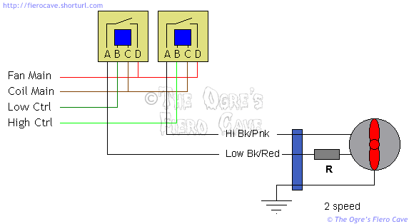
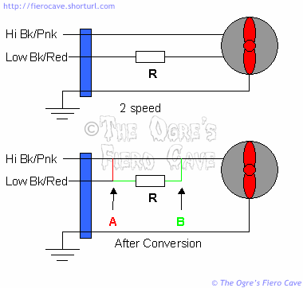

Go Home
Site Map
Go Home
Site Map
Air Movers and Shakers
Fiero and Most vehicle Engines are happy running 200-225°F. ~230° is hot. 235° is close or at boil over w/ 15PSI rad cap. Most engines get best MPG at 200-215°.
There are lots of questions about fans in the forums. Here are some of the most common fan items.
Fan Power
The Radiator fan Main Power feed is run directly to Fusible Link A in the engine bay. This circuit is otherwise non-fused.
The Fan Control circuit is run from the FAN E fuse in the fuse box under the dash.
If the Radiator fan Main Power feed is tapped for auxiliary lighting or horns, the new equipment must have it's own fuses! High current loads, like Fog/Driving lights, should be run as new fused circuits to the main distribution terminal in the engine bay.
What controls the fan and when does the fan turn on?
In all Fiero the AC selector in the passenger compartment is tied to the fan control line. Turning on the AC will also spin up the cooling system fan(s). (AC/Heater Control at Max or Bi Level but not Defrost! Defrost uses AC but will not run the fan.)
In 84 with no AC, all 85-86 4 cylinder, and all V6, the single speed fan uses a thermal switches in the engine block and activates at 235°F (Turn off at 225°F) or when the AC is turned on.
84 with AC use a 2-speed fan. According to GM schematics this fan has 2 senders. One sender is a single switch that activates at 235°F. The other sender has 2 switches that activate at 221°F and 246°F. The low speed will activate when the 221°F or the 235°F contacts close or when the air conditioning is on. High speed will activate only when the 241°F contacts close.
In 87-88 Fiero with the 4-cylinder DIS motor, the ECM controls the fan. These cars have no fan switch in the block. The ECM activates the single speed fan at 225°F and turns it off below 211°F. The fan is also activated by the AC as in previous models. (The ECM is able to run a 2 speed fan or a second fan but I am not aware of any 87-88 4 cyl that is setup for either.)
Note: Some A/C compressor models, DA6 and HR6, also have High pressure switch wired in to activate radiator fan. When wired, switch will activate above 280 PSI (1931 kPa).
Where is the full schematic for the fan?
All the fan schematics are in the Haynes repair book. I haven't seen Chiltons but imagine they are there to. You don't need the full shop book for this system.
Note however that the 87-88 4 cylinder schematic is only available in the full Helms shop book or ALLdata products. This should not be that big a deal for most people. The 87-88 system is the same except there is no engine switch for the fan. The wire that used to go to that switch now goes to a terminal on the ECM.
84 Fan Motor Resistor
Specs are: 0.3 Ohm, 5% tolerance, 50 Watts, Wirewound in Ceramic shell.
Wirewound in Aluminum shell is a good substitute. 0.33 Ohm is ok and maybe easier to find.
Resistor Spec (PDF)
Thanks to maryjane and update from RWDPLZ.
Note:
Aluminum Housings power resistors are Watt Rated using a heatsink. If you don't want a heatsink or keep the heatsink very small then Look in the product specs for Watts without Heatsink. In all cases you need to bolt/screw that to any metal. Use heatsink grease. Mount to car's frame is best so the frame is a heatsink or part of your heatsink.
How does the fan relate to the Thermostat and what fan switch modification is best?
Assuming there are no cooling system problems. The Thermostat sets the bottom limit of the engine operating range and the Fan sets the top limit. In a stock Fiero the thermostat is full open at 195°F but the fan doesn't activate until 235°F in most models. Most cars however are showing the operational signs of over heating well below the fan turn on point. Namely ping and knock.
To combat this many people have installed a lower temperature fan switch in the engine block. Other people have installed manual fan switches. These are reasonable solutions but as some people have noted the fan may be on when it isn't really needed in some cases. Many cases, Running radiator fan is a band-aid fix and hides real problem(s), like plugged radiator or crushed pipes. If you see high temp and car is moving 10-35mph (speed depends on weather) then check coolant system, fix missing car body panels, remove "power pulley," etc. This causes unnecessary load on the alternator. The main result of this is a slight reduction in fuel economy.
Does this mean the low temp switch in the engine or a manual switch is bad?
Good or Bad is Not the point... Main issue is many are saying to install low temp switch on a car with major cooling problems. All you get is to hide real problems. You're still having Plug or crush parts. Is easy to see radiators half filled with junk and looks ok at top.
Mods
Remember Most mods affect fan If AC is off... Fiero AC controls bypass engine switch(es).
Easy for older L4 and all V6 is use Stant 195° SuperStat and maybe 210° switch. 210° switch should keep fan off on the highway.
The more ideal solution is to use an adjustable thermal switch on the radiator itself. The goal is to adjust this switch so that the fan is off most of the time but activates when you are stopped or in slow moving traffic. In these conditions little or no air moves thru the radiator and the temperature rises quickly.
What method you chose is ultimately a matter of personal choice and your skill level. In order of difficulty from least to most the choices go: Engine switch, manual switch, and adjustable switch.
Can I alter the 2 speed fan as described above?
Yes but you would want to do this on the low speed line only. There's no need in most cases to mess with the hi speed line. The only reason I can think of to lower hi speed turn on temperature is if you live someplace where it is really hot allot of the time.
Does the fan activation temperature affect any other things?
Yes there is one other thing many people forget about. The Automatic transmission uses a heat exchanger in the radiator tank to cool the transmission fluid. The hotter the transmission fluid operates the shorter its life will be. At extreme temperatures the transmission itself will be damaged.
Relay Conversion
This is for the people that have a bad relay on the 2 speed fan.
I'm told the dual relay module for the 2-speed fan is now costing $120 to $130 vs. about $30 for a standard one. The module can be replaced by two standard relays. Even if you use all new parts, the cost of the two relays and socket should be less than the module. Since it's unlikely for two relays to fail at the same time, you'll be able to simply swap relays for testing or roadside repair.
Warning! The Fan Main lead is hot at all times. Disconnect the battery before making this modification!
You need:
- 2 standard fan relays, I recommend new ones. If you get used ones, get extras.
- 2 relay sockets, these can be new or used.
The specific details will depend on the relays and where you get them. I'm writing this for standard GM fan relays and sockets, which are readily available new or used.
If you get used sockets, make sure you get plenty of wire to work with. Then all you need are some weatherproof butt splices. (I prefer non-insulated crimp splices and weatherproof heat shrink tube for this kind of work.)
GM uses the same socket and relay for numerous items. You should be able to find a set pretty easy in the salvage yard. Get the mounting bracket(s) to. There are brackets that will hold multiple relay sockets. They are best but singles will work.
The following table shows how to connect the wires from the old relay to the two new ones. GM has letters marked right on these sockets. Use those letters not the wire colors on the used sockets.
| Dual to split relay conversion | ||||
|---|---|---|---|---|
| OEfunction | OE wire color |
OE Dual Relay Terminal |
New Low Speed Relay Terminal |
New High Speed |
| High Out | Black/Pink | A | A | |
| Low Out | Black/Red | B | A | |
| Relay Coil Hot | Brown/White | C | C | C |
| High Control | Lt Green/Black | D | B | |
| Low Control | Dk Green/Black | E | B | |
| Fan Main | Red | G | D | D |
Here's a typical schematic of the conversion...
Note that the terminals on these sockets can be released and reinserted... If possible try to match the wire sizes. Size matching is more important than colors. The most important ones are the heavy wires for Fan Main and High/Low Out. These carry quite a bit of current.
It may also be possible to release wires from the old socket and insert them into the new sockets. This would eliminate some splices. (I can't say for sure if that's possible. I've not been able to find an old style socket to test.)
Can I replace the expensive and hard to find 2-speed fan motor with a single speed one?
Yes, there are 2 ways this can be done. (Note, The fan motor and frame are treated as a single part in this article.)
- If the speed resistor is good you can transfer it to a new single speed fan assembly.
- If the speed resistor is shot you can eliminate it. This means the fan runs full speed at all times.

The diagram above shows the original 2-speed fan schematic and the conversions possible. If you don't use the resistor then the hot leads would tie at point A. If the resistor is good and you can transfer it to the new fan then you would tie the 2 hot leads as shown by B.
The best way to do this is cut the connector from original fan set and use it to hook up the new fan. This way if you ever find another 2 speed and want to use it all you'll need to do is plug it in.
One advantage to the 2-speed fan is that it's quieter when running on low. The single speed fans will make noticeably more noise.
Now I said above I was treating the fan frame and motor as an assembly. I understand it may be possible to replace just the motor. In that case you wire it as option B if the resistor is good.
The Single speed fan is very noisy. Can I make it quieter?
You could quiet it down by spinning it slower. Study the 2 speed fan schematics and add the low speed relay up front. The easiest way to control the new relay is with an aftermarket switch mounted on the radiator.
The hard part is finding a suitable resistor. My understanding is that the resistor is only an Ohm or two. The problem is it's a high wattage job. These are rather expensive and can be hard for most people to find.
Is there any real value in keeping the Engine Bay Cooling Fan in V6 cars?
This one has come up a few times now. I've done some thermal testing in the bay on my 4-cylinder. While that testing is on going I have come to a conclusion about these fans.
I would not remove the V6 Alternator & ignition coil cooling fan system. In fact I wouldn't mind adding it to my 4-cylinder setup. Even if I were worried about weight I'd look elsewhere for things to remove.
Many people have pointed out that Pontiac deleted the engine bay fan in 88. I would not read that as meaning the fan isn't needed. It is just as likely this was only a cost cutting issue since GM also uses CS-130 alternator with two fans build in. GM and other carmakers regularly delete items from a car based solely on cost. They often don't care if it affects safety or reliability. The missing plastic shield on the Ford Pinto fuel tank is a perfect example of this. GM's poor placement of fuel tanks on millions of trucks is another. For a long time GM refused to alter the tanks because it cost too much to change the parts and the assembly line tooling. They would rather risk eating a few lawsuits than fix the truck.
Preliminary tests I've done show an amazing heat buildup in the engine bay. On a 70-degree day I saw engine bay temperatures of 150+ while driving around at 30-40mph and this is with a 4 speed. As soon as I stopped moving temperatures rose even higher. The engine bay can easily reach 200+.
Something else that most people who remove the fan have forgotten is that heat may not kill the alternator or ignition coil outright but it will affect performance of those parts. These parts are mainly comprised of big coils of small to fine gage wire. As you heat a wire it's resistance rises and cuts into the efficiency of them. When you figure a traditional alternator is only about 50% efficient to start with even a small loss is costing you HP. Likewise as you heat the ignition coil it's charging time to reach full firing power goes up. This means the coil becomes less able to keep up at higher RPM ranges.
Whatever small amount of cooling the engine bay fan gives is worth keeping. The fan is tied to the same circuit as the radiator fan. I don't believe it draws a huge amount of power. I don't think it hurts your raw performance in any measurable way. By keeping the heat from biting into alternator efficiency it could even help performance.
If I was going to do anything to this fan I would look into making it come on when engine bay temperatures started climbing in addition to waiting for the main fan controls. This would need some wiring changes and an adjustable switch. The trick is figuring out how to make just the engine fan come on. A diode in the right place should take care of that.
Aftermarket fan sources
Permacool is sold thru many parts stores.
Flex-a-lite makes electric and various other radiator fans.